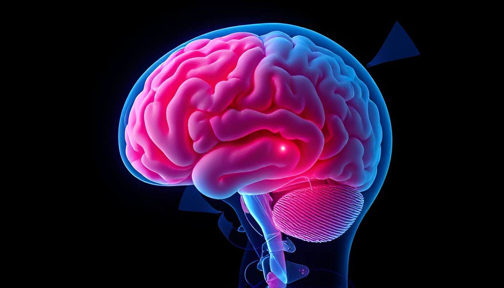

Повышенное внутричерепное давление
Повышенное внутричерепное давление (ВЧД) — это состояние, при котором давление внутри черепа превышает нормальные значения, что может приводить к различным симптомам и серьезным последствиям. Причины повышения ВЧД могут быть различными: травмы головы, опухоли, инфекции, отеки, а также нарушения в работе сосудистой системы.
Симптомы повышенного внутричерепного давления
- Головные боли: Чаще всего пульсирующие и интенсивные, могут усиливаться при кашле или наклонах.
- Тошнота и рвота: Особенно рвота, которая не связана с приемом пищи.
- Зрение: Возможны нарушения зрения, такие как двоение или затуманивание.
- Сонливость и раздражительность: Проблемы с концентрацией, усталость.
- Изменение сознания: В тяжелых случаях могут возникать спутанность сознания или кома.
Как мануальный терапевт может помочь
Мануальная терапия может быть одним из методов, способствующих облегчению симптомов, связанных с повышенным ВЧД. Однако важно помнить, что мануальная терапия должна проводиться только после консультации с врачом и при отсутствии противопоказаний.
Способы, которыми мануальный терапевт может помочь:
- Расслабление мышц: Мануальная терапия может помочь снять напряжение с мышц шеи и головы, что может снизить давление на сосуды и нервные окончания.
- Улучшение кровообращения: Терапевтические техники могут улучшить циркуляцию крови и лимфы, что способствует оттоку лишней жидкости из черепной полости.
- Устранение остеопатических нарушений: Мануальный терапевт может выявить и устранить механические нарушения в позвоночнике и черепе, которые могут способствовать повышению ВЧД.
- Работа с диафрагмой и грудной клеткой: Коррекция работы дыхательных мышц может помочь улучшить вентиляцию и снизить давление на внутренние структуры.
Важные моменты
- Консультация врача: Прежде чем начинать мануальную терапию, важно пройти обследование у врача и получить его одобрение.
- Совместное лечение: Мануальная терапия должна рассматриваться как часть комплексного лечения, включая медицинские и физиотерапевтические методы.
- Наблюдение за состоянием: После мануальной терапии важно наблюдать за своим состоянием и сообщать врачу о любых изменениях.
Если вы испытываете симптомы повышенного внутричерепного давления, важно обратиться к врачу для диагностики и получения надлежащего лечения.